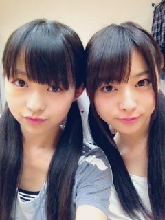

| 2012/10 06 Sat | 251回目*marika |
いつも読んでくださってる方、
初めて読んでくださった方、
コメントしてくださった方
ありがとうございます。
コメントに、ブログ一年目の
11月14日にいろいろ変えるほうが
キリが良いのでは？
という意見があったので...
11月14日にリニューアルするね

...
今日はレッスン前に
伊藤2でショッピングしたんだぜ。
ねねは久しぶりの
ショッピングだったみたいで
目がきらきらしてた笑
私はかわいい色のリップバーム
買って気分るんるんしてた。
あと、店員さんになぜか
「髪きれいですね」ってほめられて
嬉しかった
 ふふふ
ふふふ
ふふふ
なんか...今日暑かったですね

せっかく買った秋服がまだ着れない。

滝汗いらりんになる前よ

メイクしてるよ。
ね、似てない？
最近伊藤ちゃんず似てきてない⁇⁇
...
レッスンでみんなに
「えーまりかがメイクしてるー」
てめずしがられた

「大人でしょ？」
ってドヤッたらぽいされたよ笑
さゆりんが顔触ってくるよー

さゆりんが離してくれないときは
まいやんとかずみに助けを求める。
生駒もおさえにきて
「まりか、今の内に逃げろ！」
...イケメン

さゆりんとじゃれるの楽しいよ

口では言わないけどねっ
あ、そうだ！
今日はみさにマッサージした

ほめてほめて♪←
...
Wひなと今度一緒にどっか行くこと
約束してるんだぁ
ななみともお買い物したいね！
趣味合うの。
着てる服ゆるくてすき♪
ブログ読んだー！
ななみーどっか連れてってー
今日はメンバーの話ばっかりだ！
たまにはこういうのも良いね。
さて、何人の名前が
出てきたでしょうか！♪
乃木充

では、明日も頑張りまりか！
まりか
コメント(189)
2012/10/06 00:18